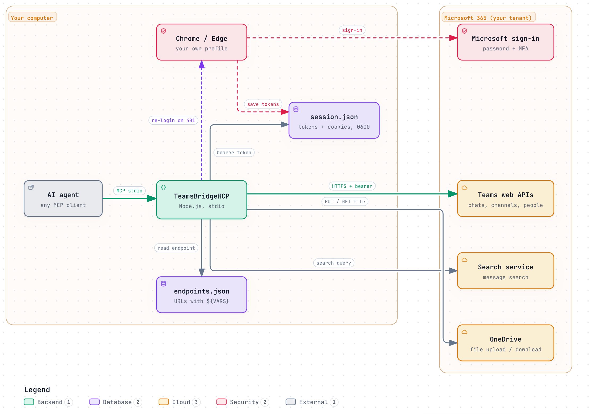

TeamsBridgeMCP
Let your AI agent read chats, answer in channels, search messages, send files and check meetings in Microsoft Teams. It signs in like you do in the browser, so you need no app registration and no admin consent.
- Model Context Protocol (stdio)
- Node.js 20+
- 13 tools
- Runs on your computer
- Apache License 2.0
How it works
The Teams web client talks to a handful of HTTPS services with a bearer token it gets when you sign in. TeamsBridgeMCP opens that same sign-in in your own browser, keeps the tokens on your disk and makes the same calls on behalf of your agent.

- Sign in once.
npm run loginopens Chrome or Edge with a dedicated profile. You sign in as usual, MFA included. The server reads the tokens from the app's own requests and writes them todata/session.json. - Agent calls a tool. Your MCP client starts the server over stdio. Each tool looks up its HTTP request in
data/endpoints.json, fills in your tenant values and sends it with your token. - Tokens renew themselves. When a token is about to expire or a call returns 401, the server signs in again headless with the saved profile. A window only appears when Microsoft asks for your password or MFA. HTTP 403 is passed through as is: it means no access to that chat or a wrong region, and signing in again would not change it.
What your agent can do
| Tool | What it does | Try asking |
|---|---|---|
list_chats | Recent chats, meeting chats and channels, newest first, with names for 1:1 chats | "What happened in my chats this morning?" |
list_channels | Your teams and their channels | "Which channels does the Platform team have?" |
list_messages | Messages of a chat or channel, including attached files | "Summarize the last 50 messages in #release." |
send_message | Post to a chat or channel, or reply in a channel thread. Markdown (bold, italic, code, links, lists) is sent as Teams formatting, @name@contoso.com mentions the person | "Reply in that thread that the fix is deployed and mention Alex." |
edit_message | Change the text of one of your messages | "Fix the typo in the message you just sent." |
react_message | Like, heart, laugh and the other Teams reactions | "Give Sam's announcement a like." |
start_chat | Open a 1:1 or group chat by e-mail address | "Start a chat with alex@contoso.com." |
search_messages | Full-text search across chats and channels | "Find where we discussed the budget freeze." |
upload_file | Upload a local file to your OneDrive, share it with the chat members and post it | "Send report.pdf to the project chat." |
download_file | Save a file attached to a message | "Download the slides Sam posted yesterday." |
list_meetings | Upcoming meetings with time, organizer and join link | "What meetings do I have tomorrow?" |
teams_login | Open the browser to sign in | "Log me in to Teams." |
teams_status | Show session and endpoint registry state | "Is the Teams connection working?" |
Why not Microsoft Graph?
Graph is the official route and the right one for products and anything an organization rolls out. It needs an app registration in Entra ID and, for most chat scopes, admin consent. TeamsBridgeMCP targets the single user who wants their own agent on their own account today.
| Microsoft Graph | TeamsBridgeMCP | |
|---|---|---|
| App registration | required | none |
| Admin consent for chat access | usually required | none, uses your sign-in |
| Documented and supported | yes | no, internal endpoints |
| Stable across Teams updates | versioned API | may break, fix in one JSON file |
| Suited for multi-user products | yes | no, personal use |
Setup
You need Node.js 20 or newer and Google Chrome or Microsoft Edge. The server drives your installed browser and downloads none of its own.
git clone https://github.com/GodModeAI2025/TeamsBridgeMCP.git
cd TeamsBridgeMCP
npm install
npm run build
npm test # optional: checks the build, needs no Teams session
npm run login # browser opens, sign in, the window closes by itselfPrefer Edge? Run TEAMS_BROWSER=msedge npm run login and pass --browser msedge to the server.
What you may need to configure
Usually nothing. Nothing tenant-specific is built in: at sign-in the server reads your chat region, partition and OneDrive host from the Teams client's own requests and stores them with the session. Flags or environment variables override what it found, flags win over the environment. teams_status shows the detected values.
| Flag | Variable | Default | Purpose |
|---|---|---|---|
--onedrive-host | TEAMS_ONEDRIVE_HOST | detected at sign-in | Your OneDrive host, for example contoso-my.sharepoint.com, used by upload_file. Set it only if detection fails: open OneDrive in the browser and copy the host from the address bar. |
--region | TEAMS_REGION | detected, else emea | Chat service region, for example emea, amer or apac. |
--partition | TEAMS_PARTITION | detected, else emea-02 | Partition for profiles and meetings. |
--chat-files-folder | TEAMS_CHAT_FILES_FOLDER | Microsoft Teams Chat Files | OneDrive folder for chat uploads. Teams localizes it, so use your language's name if it differs. |
--browser | TEAMS_BROWSER | chrome | Browser for sign-in: chrome or msedge. |
--session-file | TEAMS_SESSION_FILE | data/session.json | Optional: store the session elsewhere. |
--endpoints-file | TEAMS_ENDPOINTS_FILE | data/endpoints.json | Optional: use your own endpoint registry. |
Finding region and partition by hand
Only needed if you export the session with npm run export-session instead of signing in, or if a tool reports HTTP 403 for every chat (a wrong region shows up as 403, not 404). Open Teams in the browser, open DevTools on the Network tab and click into a chat. A request to …/api/chatsvc/region/v1/… shows the region, a request to …/api/mt/part/partition/… shows the partition.
Connect your MCP client
Run it directly to try your settings:
node dist/index.jsClaude Code:
claude mcp add teams -- node /absolute/path/TeamsBridgeMCP/dist/index.jsClaude Desktop and most other clients, here with a flag that overrides a detected value:
{
"mcpServers": {
"teams": {
"command": "node",
"args": [
"/absolute/path/TeamsBridgeMCP/dist/index.js",
"--region", "emea"
]
}
}
}Or with environment variables, if your client prefers env:
{
"mcpServers": {
"teams": {
"command": "node",
"args": ["/absolute/path/TeamsBridgeMCP/dist/index.js"],
"env": { "TEAMS_BROWSER": "msedge" }
}
}
}An unknown flag stops the server with an error, so a typo shows up right away. Then ask your agent to call teams_status.
Security model
- Same rights as you. The server acts with your account's permissions. It cannot see chats, teams or files you could not open yourself.
- Secrets stay local.
data/session.json(mode 0600), the browser profile andcaptures/are gitignored and never leave your computer except as requests to Microsoft. - No third party in between. There is no hosted backend. Requests go straight from your machine to Microsoft 365.
- Agents act in your name. Messages from others are input your agent reads. Keep tool approval on in your MCP client for
send_message,edit_message,react_message,upload_fileandstart_chat, so a crafted message cannot make the agent post or share files without you seeing it. - Leaked session? Sign out of Teams on all devices or reset your password. That invalidates the stored tokens.
When Microsoft changes something
Every request the server makes is one entry in data/endpoints.json. If a tool starts failing with HTTP 404 or 410, start Chrome with --remote-debugging-port=9222, run npm run capture, repeat the action in Teams and copy the new request into that entry. Placeholders like ${TEAMS_REGION} keep tenant values out of the file. The README walks through it step by step.
FAQ
Does it have to be Chrome?
No. Any installed Chrome or Edge works (--browser msedge). A real browser is needed because sign-in, MFA and conditional access happen in Microsoft's own pages. The server never sees your password.
Does my data go anywhere else?
No. The server runs locally and talks only to Microsoft 365. What your AI agent does with the results depends on the agent and model you connect.
What happens when Teams updates?
Usually nothing. If Microsoft moves an endpoint, the affected tool reports an HTTP error and you update one JSON entry. The server never guesses endpoints.
Can it join or record meetings?
No. It lists meetings with time, organizer and join link. Joining, audio and recording are out of scope.
Real-time notifications?
Not yet. Reads are pull-based: the agent asks, the server fetches.
Responsible use
Undocumented API. The endpoints are internal to the Teams web client. Microsoft can change them at any time and does not support this use. The software comes as is, without warranty, under the Apache License 2.0.
Your account, your rules. Use it only with an account you are allowed to automate. On a work or school tenant, check your organization's IT and acceptable-use policies first, or ask your administrator.
Respect others. Chats contain other people's messages and personal data. Do not use the tool to collect, export or monitor conversations beyond what you would do by hand.
Legal background
This section explains why the author considers publishing this project lawful. It is provided for transparency only and is not legal advice.
- Interfaces are not protected as such. Under EU law, the functionality of a computer program, its programming language and its data formats are not protected by copyright (Court of Justice of the European Union, judgment of 2 May 2012, SAS Institute, C-406/10). This project describes and uses interfaces. It does not copy any part of Microsoft's software.
- Observing a program is permitted. A lawful user may observe, study and test the functioning of a program in order to determine the ideas and principles behind it, while running it as intended (Art. 5(3) Directive 2009/24/EC, implemented in Germany as § 69d(3) UrhG). The endpoints were identified by observing the network traffic of the Teams web client during normal, authorized use. No code was decompiled or disassembled.
- Reverse engineering of available products is permitted. Acquiring information by observing, studying or testing a product that has been made available to the public is lawful (Art. 3(1)(b) Directive (EU) 2016/943, implemented in Germany as § 3(1) No. 2 GeschGehG).
- No protection measures are circumvented. The software only uses the session the user establishes by signing in with their own account in a regular browser. It grants no additional rights and works only with the permissions that account already has.
- Contractual terms remain the user's responsibility. Terms of service of Microsoft and the policies of the organization that manages a tenant may restrict automated access. They bind the user of an account, not the publication of this source code. Each user is responsible for checking that their use complies with the terms and policies that apply to them.
Private project
TeamsBridgeMCP is a private project. The author created it entirely in their own time, with their own equipment and resources, on their own initiative. It was not created in the course of any employment, as part of any job duties, or on behalf of or commissioned by any employer, client or other organization. It contains no code, data, documents or confidential information belonging to any employer or client. No employer or organization owns, maintains, endorses or is responsible for this project.
Trademarks
Microsoft, Microsoft Teams, Microsoft 365, Microsoft Edge, Entra ID, OneDrive and SharePoint are trademarks of the Microsoft group of companies. Chrome is a trademark of Google LLC. These names appear here only to describe what this software works with. TeamsBridgeMCP is an independent open-source project and is not affiliated with, sponsored or endorsed by Microsoft or Google. It contains no Microsoft logos, icons or code.